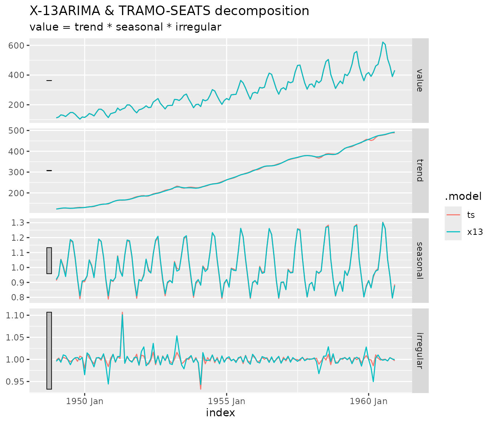

Introduction
fable.rjd3 lets you seasonally adjust
tsibble series with the JDemetra+ v3 algorithms, using the
fabletools
modelling framework. Four models are available:
| Model | Algorithm | Decomposition |
|---|---|---|
X13() |
X-13ARIMA (rjd3x13::jx13()) |
yes |
TRAMOSEATS() |
TRAMO-SEATS
(rjd3tramoseats::jtramoseats()) |
yes |
REGARIMA() |
Reg-ARIMA pre-adjustment only
(rjd3x13::jregarima()) |
no |
TRAMO() |
TRAMO pre-adjustment only
(rjd3tramoseats::jtramo()) |
no |
The fitted models keep the underlying Java object.
The usual decomposition is available through components(),
and any other JDemetra+ indicator (outliers, regression
coefficients, diagnostics…) can be extracted with
jd3_indicator().
The package re-exports the main verbs of fabletools
(model(), components(),
forecast(), glance(), tidy(),
report()…) and a few functions of tsibble, so
that library(fable.rjd3) is enough.
Quick start
The series must be a univariate tsibble with a
yearmonth or yearquarter index and no gaps.
The frequency is deduced from the interval between the observations, so
monthly, bimonthly, quarterly, four-monthly and semi-annual series are
all supported (for example, a yearmonth index with a step
of 2 months is a bimonthly series, with a step of 6 months a semi-annual
one). Here we use the classic AirPassengers data.
air <- as_tsibble(AirPassengers)
air
#> # A tsibble: 144 x 2 [1M]
#> index value
#> <mth> <dbl>
#> 1 1949 Jan 112
#> 2 1949 Feb 118
#> 3 1949 Mar 132
#> 4 1949 Apr 129
#> 5 1949 May 121
#> 6 1949 Jun 135
#> 7 1949 Jul 148
#> 8 1949 Aug 148
#> 9 1949 Sep 136
#> 10 1949 Oct 119
#> # ℹ 134 more rowsModels are fitted with model(), exactly as with other
fable models. Several models can be fitted at once, which
makes it easy to compare the two methods.
mb <- model(
air,
x13 = X13(value),
ts = TRAMOSEATS(value)
)
mb
#> # A mable: 1 x 2
#> x13 ts
#> <model> <model>
#> 1 <X-13ARIMA, ARIMA(0,1,1)(0,1,1)> <TRAMO-SEATS, ARIMA(0,1,0)(0,1,1)>The model summary shows the method and the selected ARIMA model.
Decomposition
For X13() and TRAMOSEATS(),
components() returns a dable with the original
series and the columns trend, seasonal,
irregular and season_adjust. The relation
between the components follows the decomposition mode of the model
(additive, multiplicative, log-additive or pseudo-additive).
components(mb)
#> # A dable: 288 x 7 [1M]
#> # Key: .model [2]
#> # : value = trend * seasonal * irregular
#> .model index value trend seasonal irregular season_adjust
#> <chr> <mth> <dbl> <dbl> <dbl> <dbl> <dbl>
#> 1 x13 1949 Jan 112 122. 0.920 0.996 122.
#> 2 x13 1949 Feb 118 124. 0.948 1.00 125.
#> 3 x13 1949 Mar 132 126. 1.05 0.994 125.
#> 4 x13 1949 Apr 129 128. 1.00 1.01 129.
#> 5 x13 1949 May 121 128. 0.939 1.01 129.
#> 6 x13 1949 Jun 135 127. 1.07 0.998 127.
#> 7 x13 1949 Jul 148 126. 1.19 0.988 125.
#> 8 x13 1949 Aug 148 126. 1.17 0.999 126.
#> 9 x13 1949 Sep 136 127. 1.07 1.00 128.
#> 10 x13 1949 Oct 119 128. 0.925 1.00 129.
#> # ℹ 278 more rowsWith the ggtime package, the decomposition can be
plotted with autoplot().
library(ggtime)
ggplot2::autoplot(components(mb))
Setting the specification
The specification can be defined in two ways, which can be combined.
Ex ante, with the spec argument
spec accepts a name (such as "rsa3" for
X13() or "rsafull" for
TRAMOSEATS()), or a specification object created with
rjd3x13::x13_spec() /
rjd3tramoseats::tramoseats_spec() and modified with the
set_*() functions of rjd3toolkit. This gives
access to everything JDemetra+ offers.
my_spec <- rjd3x13::x13_spec("rsa3")
my_spec <- rjd3toolkit::set_transform(my_spec, fun = "Log")
my_spec <- rjd3toolkit::add_outlier(my_spec, type = "AO", date = "1955-01-01")
mb_spec <- model(air, x13 = X13(value, spec = my_spec))
glance(mb_spec)
#> # A tibble: 1 × 19
#> .model aicc nobs nparams nout lb_stat lb_pvalue normality_stat
#> <chr> <dbl> <dbl> <dbl> <dbl> <dbl> <dbl> <dbl>
#> 1 x13 989. 144 4 1 24.3 0.333 3.81
#> # ℹ 11 more variables: normality_pvalue <dbl>, ftest_sa_stat <dbl>,
#> # ftest_sa_pvalue <dbl>, qs_test_sa_stat <dbl>, qs_test_sa_pvalue <dbl>,
#> # combined_test_sa <chr>, combined_test_sa_lastyears <chr>,
#> # td_on_sa_stat <dbl>, td_on_sa_pvalue <dbl>, Q <dbl>, Q_M2 <dbl>In the formula, with specials
Specials are used on the right-hand side of the formula. Each one
records a call to a function of rjd3toolkit (or of the
algorithm package) that is applied to the base specification:
| Special | Calls |
|---|---|
spec(x) |
base specification, same as the spec
argument |
basic(...) |
rjd3toolkit::set_basic() |
transform(...) |
rjd3toolkit::set_transform() |
estimate(...) |
rjd3toolkit::set_estimate() |
automodel(...) |
rjd3toolkit::set_automodel() |
outlier(...) |
rjd3toolkit::set_outlier() |
add_outlier(...) |
rjd3toolkit::add_outlier() |
easter(...) |
rjd3toolkit::set_easter() |
tradingdays(...) |
rjd3toolkit::set_tradingdays() |
arima(...) |
rjd3toolkit::set_arima() |
ramp(...) |
rjd3toolkit::add_ramp() |
usrdefvar(...) |
rjd3toolkit::add_usrdefvar() |
benchmarking(...) |
rjd3toolkit::set_benchmarking()
(X13() and TRAMOSEATS()) |
x11(...) |
rjd3x13::set_x11() (X13()
only) |
seats(...) |
rjd3tramoseats::set_seats()
(TRAMOSEATS() only) |
xreg(...) |
user regressors taken from tsibble columns |
mb_sp <- model(
air,
x13 = X13(
value ~ transform(fun = "Log") +
outlier(outliers.type = c("AO", "LS")) +
x11(seasonal.filter = "S3X5")
)
)
glance(mb_sp)
#> # A tibble: 1 × 19
#> .model aicc nobs nparams nout lb_stat lb_pvalue normality_stat
#> <chr> <dbl> <dbl> <dbl> <dbl> <dbl> <dbl> <dbl>
#> 1 x13 947. 144 6 1 23.9 0.354 0.763
#> # ℹ 11 more variables: normality_pvalue <dbl>, ftest_sa_stat <dbl>,
#> # ftest_sa_pvalue <dbl>, qs_test_sa_stat <dbl>, qs_test_sa_pvalue <dbl>,
#> # combined_test_sa <chr>, combined_test_sa_lastyears <chr>,
#> # td_on_sa_stat <dbl>, td_on_sa_pvalue <dbl>, Q <dbl>, Q_M2 <dbl>The base spec is applied first, then the specials in a
fixed order, then xreg(): later settings override earlier
ones. A special that does not apply to the method (for example
x11() in TRAMOSEATS()) is ignored with a
warning.
The base specification is also stored in the model as the
reference specification (argument ref_spec, by
default equal to spec). It is the reference used by the
refresh policies of refit() and stream(), see
below.
Regressors from the tsibble
Since a specification created ex ante cannot refer to columns of your
data, regressors are declared with the xreg() special. The
variables are added to the modelling context, and to the specification
when regeffect is given.
air$shock <- as.numeric(air$index == yearmonth("1955 Jan"))
mb_xreg <- model(air, x13 = X13(value ~ xreg(shock, regeffect = "Series")))
#> Warning: 1 error encountered for x13
#> [1] unused argument (effect = x$regeffect)
tidy(mb_xreg)
#> # A tibble: 0 × 3
#> # ℹ 3 variables: .model <chr>, term <chr>, estimate <dbl>For custom calendars, build a context with
rjd3toolkit::modelling_context() and pass it through the
context argument.
Extracting results
Diagnostics and regression terms
-
glance()returns a one-row summary per model: information criteria, number of observations and outliers, tests on the residuals and, for seasonal adjustment models, tests on the seasonally adjusted series and the quality statistics of the method. Tests give two columns (_statand_pvalue) and the combined seasonality tests give a text. The set of indicators depends on the method;glance(x, ids = )takes a vector of indicator ids to choose others. -
tidy()returns one row per coefficient (ARIMA parameters, regression variables, outliers, calendar effects) with its standard error, statistic and p-value. Coefficients fixed in the specification are included. -
report()prints a summary of one model: the coefficients and the tests, in the spirit ofsummary()for a regression.
glance(mb)
#> # A tibble: 2 × 22
#> .model aicc nobs nparams nout lb_stat lb_pvalue normality_stat
#> <chr> <dbl> <dbl> <dbl> <dbl> <dbl> <dbl> <dbl>
#> 1 x13 947. 144 6 1 23.9 0.354 0.763
#> 2 ts 936. 144 7 2 30.8 0.128 0.834
#> # ℹ 14 more variables: normality_pvalue <dbl>, ftest_sa_stat <dbl>,
#> # ftest_sa_pvalue <dbl>, qs_test_sa_stat <dbl>, qs_test_sa_pvalue <dbl>,
#> # combined_test_sa <chr>, combined_test_sa_lastyears <chr>,
#> # td_on_sa_stat <dbl>, td_on_sa_pvalue <dbl>, Q <dbl>, Q_M2 <dbl>,
#> # seas_var <dbl>, irr_var <dbl>, seas_irr_corr <dbl>
tidy(mb_sp)
#> # A tibble: 5 × 6
#> .model term estimate std.error statistic p.value
#> <chr> <chr> <dbl> <dbl> <dbl> <dbl>
#> 1 x13 theta(1) -0.116 0.109 -1.06 2.89e- 1
#> 2 x13 btheta(1) -0.497 0.0723 -6.88 2.55e-10
#> 3 x13 td2 -0.00295 0.000533 -5.53 1.79e- 7
#> 4 x13 easter [1] 0.0178 0.00730 2.43 1.63e- 2
#> 5 x13 AO (1951-05) 0.100 0.0208 4.81 4.33e- 6
report(mb["x13"])
#> Series: value
#> Model: X-13ARIMA, ARIMA(0,1,1)(0,1,1)
#> Mode: Multiplicative; N obs.: 144
#>
#>
#> Coefficients
#> Estimate Std. Error t value Pr(>|t|)
#> theta(1) -0.1155344 0.1085487 -1.064 0.2892
#> btheta(1) -0.4974142 0.0722919 -6.881 2.55e-10 ***
#> td2 -0.0029497 0.0005334 -5.530 1.79e-07 ***
#> easter [1] 0.0177674 0.0072985 2.434 0.0163 *
#> AO (1951-05) 0.1001562 0.0208399 4.806 4.33e-06 ***
#> ---
#> Signif. codes: 0 '***' 0.001 '**' 0.01 '*' 0.05 '.' 0.1 ' ' 1
#>
#> Tests on residuals: Independence (Ljung-Box: Good, 0.354); Normality (Doornik-Hansen: Good, 0.683)
#> Filters: S3X3, H-9; M-Statistics: q (Good, 0.198); q-m2 (Good, 0.219)
#> Tests on SA: QS (Good, 1.000); F-test (Good, 0.959)
#> Combined test on SA: None (last years: None)
#> Residual trading days on SA (F-test): Good (0.223)Outliers
outliers() returns the rows of the data identified as
outliers (additive outliers, level shifts, transitory changes, seasonal
outliers) by the pre-adjustment model. The type argument
keeps some types only, and the type and the statistics of each outlier
are available in tidy().
outliers(mb)
#> # A tsibble: 3 x 3 [1M]
#> # Key: .model [2]
#> .model index value
#> <chr> <mth> <dbl>
#> 1 x13 1951 May 172
#> 2 ts 1951 May 172
#> 3 ts 1954 Feb 188
outliers(mb, type = "AO")
#> # A tsibble: 3 x 3 [1M]
#> # Key: .model [2]
#> .model index value
#> <chr> <mth> <dbl>
#> 1 x13 1951 May 172
#> 2 ts 1951 May 172
#> 3 ts 1954 Feb 188Any JDemetra+ indicator
jd3_dictionary() lists the indicators available for a
model, and jd3_indicator() extracts one of them via
rjd3toolkit::result().
head(jd3_dictionary(mb), 15)
#> [1] "out_i" "out_i_f(?)" "out_i_b(?)" "out_t" "out_t_f(?)"
#> [6] "out_t_b(?)" "out_s" "out_s_f(?)" "out_s_b(?)" "reg_i"
#> [11] "reg_i_f(?)" "reg_i_b(?)" "reg_t" "reg_t_f(?)" "reg_t_b(?)"
# the raw object, for a single model
jd3_indicator(mb$x13[[1]], "sa")
#> Jan Feb Mar Apr May Jun Jul Aug
#> 1949 121.7202 124.5235 125.3989 128.9076 128.8437 126.7308 124.6712 126.0850
#> 1950 125.6865 133.5459 134.2574 133.9260 134.1034 139.5782 142.8219 144.5915
#> 1951 159.3326 160.9571 165.6360 166.9271 182.7617 164.6639 168.0976 168.7858
#> 1952 187.9674 190.2420 182.7310 185.1004 190.0056 200.1497 194.4352 200.1589
#> 1953 214.4421 218.5414 228.2417 240.8908 232.6058 223.6963 219.9353 224.3191
#> 1954 221.9589 213.4096 233.3723 233.2509 236.7465 239.9818 244.8226 242.7448
#> 1955 263.1890 268.4385 269.4705 274.0846 275.9289 283.4864 288.3001 287.9976
#> 1956 311.1830 312.5324 316.4456 325.7445 328.9640 330.2841 327.3915 331.8471
#> 1957 348.6708 353.5923 361.8524 361.0335 367.4152 368.1771 369.5130 374.1977
#> 1958 377.6052 376.3330 371.2029 361.4526 371.8343 383.5362 387.0679 396.5770
#> 1959 397.4726 407.0105 415.3590 418.4369 424.0706 421.5136 430.2867 436.1496
#> 1960 457.3264 452.8993 442.8725 472.5261 479.7372 477.7933 477.9935 481.1243
#> Sep Oct Nov Dec
#> 1949 127.6503 128.6635 128.4876 129.6968
#> 1950 147.4894 144.6289 140.7914 152.3225
#> 1951 171.1440 176.4124 180.4229 180.5127
#> 1952 199.2426 207.0293 208.8580 215.1385
#> 1953 225.4261 226.5113 221.8871 223.1003
#> 1954 245.5116 245.0260 253.6693 255.4452
#> 1955 294.8441 294.1301 297.0567 308.8018
#> 1956 329.1515 334.5141 340.1138 339.5918
#> 1957 378.4526 377.6560 379.6653 379.2973
#> 1958 383.1635 389.1312 382.3159 386.9628
#> 1959 439.2162 436.7974 450.9071 465.6466
#> 1960 482.6658 489.4866 490.6654 491.8786
# the same indicator for all the models of the mable
jd3_indicator(mb, "sa")
#> # A tibble: 288 × 4
#> .model id index value
#> <chr> <chr> <mth> <dbl>
#> 1 x13 sa 1949 Jan 122.
#> 2 x13 sa 1949 Feb 125.
#> 3 x13 sa 1949 Mar 125.
#> 4 x13 sa 1949 Apr 129.
#> 5 x13 sa 1949 May 129.
#> 6 x13 sa 1949 Jun 127.
#> 7 x13 sa 1949 Jul 125.
#> 8 x13 sa 1949 Aug 126.
#> 9 x13 sa 1949 Sep 128.
#> 10 x13 sa 1949 Oct 129.
#> # ℹ 278 more rowsFor a mable, the result depends on the type of the indicator: a
number gives a column value, a series is returned in long
format (index and value), and a test gives the
columns statistic, p.value and
distribution. With several ids, a named list is
returned.
jd3_indicator(mb, "residuals.lb")
#> # A tibble: 2 × 5
#> .model id statistic p.value distribution
#> <chr> <chr> <dbl> <dbl> <chr>
#> 1 x13 residuals.lb 23.9 0.354 "Chi2 with 22.0 degrees of freedom "
#> 2 ts residuals.lb 30.8 0.128 "Chi2 with 23.0 degrees of freedom "
jd3_indicator(mb, c("likelihood.aicc", "likelihood.nobs"))
#> $likelihood.aicc
#> # A tibble: 2 × 3
#> .model id value
#> <chr> <chr> <dbl>
#> 1 x13 likelihood.aicc 947.
#> 2 ts likelihood.aicc 936.
#>
#> $likelihood.nobs
#> # A tibble: 2 × 3
#> .model id value
#> <chr> <chr> <dbl>
#> 1 x13 likelihood.nobs 144
#> 2 ts likelihood.nobs 144Pre-adjustment models and forecasts
REGARIMA() and TRAMO() fit the
pre-adjustment model only, with the same specifications and specials as
X13() and TRAMOSEATS(). They have no
decomposition, so no components(), but all the other
methods work.
mb_pre <- model(air, regarima = REGARIMA(value), tramo = TRAMO(value))
glance(mb_pre)
#> # A tibble: 2 × 11
#> .model aicc nobs nparams nout lb_stat lb_pvalue normality_stat
#> <chr> <dbl> <dbl> <dbl> <dbl> <dbl> <dbl> <dbl>
#> 1 regarima 947. 144 6 1 23.9 0.354 0.763
#> 2 tramo 936. 144 7 2 30.8 0.128 0.834
#> # ℹ 3 more variables: normality_pvalue <dbl>, lb2_stat <dbl>, lb2_pvalue <dbl>Forecasts and backcasts
forecast() forecasts the raw series from the
pre-adjustment model, for the four models. The result is a distribution:
log-normal if the series is log-transformed, normal otherwise. The
default point forecast .mean is the mean of the
distribution; use point_forecast to choose another summary,
for example the median, which is the forecast given by JDemetra+.
forecast(mb_pre, h = 12)
#> # A fable: 24 x 4 [1M]
#> # Key: .model [2]
#> .model index
#> <chr> <mth>
#> 1 regarima 1961 Jan
#> 2 regarima 1961 Feb
#> 3 regarima 1961 Mar
#> 4 regarima 1961 Apr
#> 5 regarima 1961 May
#> 6 regarima 1961 Jun
#> 7 regarima 1961 Jul
#> 8 regarima 1961 Aug
#> 9 regarima 1961 Sep
#> 10 regarima 1961 Oct
#> # ℹ 14 more rows
#> # ℹ 2 more variables: value <dist>, .mean <dbl>
forecast(mb_pre, h = 12, point_forecast = list(.median = median))
#> # A fable: 24 x 4 [1M]
#> # Key: .model [2]
#> .model index
#> <chr> <mth>
#> 1 regarima 1961 Jan
#> 2 regarima 1961 Feb
#> 3 regarima 1961 Mar
#> 4 regarima 1961 Apr
#> 5 regarima 1961 May
#> 6 regarima 1961 Jun
#> 7 regarima 1961 Jul
#> 8 regarima 1961 Aug
#> 9 regarima 1961 Sep
#> 10 regarima 1961 Oct
#> # ℹ 14 more rows
#> # ℹ 2 more variables: value <dist>, .median <dbl>backcast() does the same for the periods preceding the
series.
backcast(mb, h = 12)
#> # A tibble: 24 × 3
#> .model index
#> <chr> <mth>
#> 1 x13 1948 Jan
#> 2 x13 1948 Feb
#> 3 x13 1948 Mar
#> 4 x13 1948 Apr
#> 5 x13 1948 May
#> 6 x13 1948 Jun
#> 7 x13 1948 Jul
#> 8 x13 1948 Aug
#> 9 x13 1948 Sep
#> 10 x13 1948 Oct
#> # ℹ 14 more rows
#> # ℹ 1 more variable: dist <dist>Fitted values, residuals and missing values
fitted() and residuals() give the
one-step-ahead fitted values and the residuals of the pre-adjustment
model, with NA where they are not defined. They make
augment() and accuracy() work.
residuals(mb)
#> # A tsibble: 288 x 3 [1M]
#> # Key: .model [2]
#> .model index .resid
#> <chr> <mth> <dbl>
#> 1 x13 1949 Jan NA
#> 2 x13 1949 Feb NA
#> 3 x13 1949 Mar NA
#> 4 x13 1949 Apr NA
#> 5 x13 1949 May NA
#> 6 x13 1949 Jun NA
#> 7 x13 1949 Jul NA
#> 8 x13 1949 Aug NA
#> 9 x13 1949 Sep NA
#> 10 x13 1949 Oct NA
#> # ℹ 278 more rows
augment(mb)
#> # A tsibble: 288 x 6 [1M]
#> # Key: .model [2]
#> .model index value .fitted .resid .innov
#> <chr> <mth> <dbl> <dbl> <dbl> <dbl>
#> 1 x13 1949 Jan 112 NA NA NA
#> 2 x13 1949 Feb 118 NA NA NA
#> 3 x13 1949 Mar 132 NA NA NA
#> 4 x13 1949 Apr 129 NA NA NA
#> 5 x13 1949 May 121 NA NA NA
#> 6 x13 1949 Jun 135 NA NA NA
#> 7 x13 1949 Jul 148 NA NA NA
#> 8 x13 1949 Aug 148 NA NA NA
#> 9 x13 1949 Sep 136 NA NA NA
#> 10 x13 1949 Oct 119 NA NA NA
#> # ℹ 278 more rowsinterpolate() replaces the missing values of the series
by the estimates of the model.
air_na <- air
air_na$value[c(20, 21)] <- NA
mb_na <- model(air_na, x13 = X13(value))
interpolate(mb_na, air_na)
#> # A tsibble: 144 x 2 [1M]
#> index value
#> <mth> <dbl>
#> 1 1949 Jan 112
#> 2 1949 Feb 118
#> 3 1949 Mar 132
#> 4 1949 Apr 129
#> 5 1949 May 121
#> 6 1949 Jun 135
#> 7 1949 Jul 148
#> 8 1949 Aug 148
#> 9 1949 Sep 136
#> 10 1949 Oct 119
#> # ℹ 134 more rowsUpdating models
When new observations arrive, a model can be updated with the refresh
policies of JDemetra+ ("Fixed" by default: the estimated
parameters are kept; the other policies are
"FreeParameters", "Complete",
"Outliers_StochasticComponent", "Outliers",
"FixedParameters",
"FixedAutoRegressiveParameters" and
"Current"). The refresh is based on the estimated
specification and on the reference specification stored in the
model.
-
stream()appends the new observations to the data of the model; -
refit()applies the model to a new complete dataset.
start_new <- yearmonth("1960 Jan")
air_old <- air[air$index < start_new, c("index", "value")]
air_new <- air[air$index >= start_new, c("index", "value")]
mb_old <- model(air_old, x13 = X13(value))
mb_ext <- stream(mb_old, air_new)
components(mb_ext)
#> # A dable: 144 x 7 [1M]
#> # Key: .model [1]
#> # : value = trend * seasonal * irregular
#> .model index value trend seasonal irregular season_adjust
#> <chr> <mth> <dbl> <dbl> <dbl> <dbl> <dbl>
#> 1 x13 1949 Jan 112 122. 0.919 0.995 122.
#> 2 x13 1949 Feb 118 125. 0.949 0.998 124.
#> 3 x13 1949 Mar 132 127. 1.05 0.997 126.
#> 4 x13 1949 Apr 129 128. 0.996 1.01 130.
#> 5 x13 1949 May 121 128. 0.943 1.00 128.
#> 6 x13 1949 Jun 135 127. 1.07 0.999 127.
#> 7 x13 1949 Jul 148 126. 1.19 0.989 125.
#> 8 x13 1949 Aug 148 126. 1.17 0.999 126.
#> 9 x13 1949 Sep 136 127. 1.07 1.00 128.
#> 10 x13 1949 Oct 119 128. 0.925 1.01 129.
#> # ℹ 134 more rows
mb_refit <- refit(mb_old, air[c("index", "value")], policy = "FreeParameters")Several series
Because models are defined through fabletools, keyed
tsibbles work as usual: one model is fitted per series.
a <- as.data.frame(air[c("index", "value")]); a$series <- "A"
b <- a; b$value <- sqrt(b$value) * 10; b$series <- "B"
two <- as_tsibble(rbind(a, b), index = index, key = series)
mb2 <- model(two, x13 = X13(value))
mb2
#> # A mable: 2 x 2
#> # Key: series [2]
#> series x13
#> <chr> <model>
#> 1 A <X-13ARIMA, ARIMA(0,1,1)(0,1,1)>
#> 2 B <X-13ARIMA, ARIMA(0,1,0)(0,1,1)>
glance(mb2)
#> # A tibble: 2 × 20
#> series .model aicc nobs nparams nout lb_stat lb_pvalue normality_stat
#> <chr> <chr> <dbl> <dbl> <dbl> <dbl> <dbl> <dbl> <dbl>
#> 1 A x13 947. 144 6 1 23.9 0.354 0.763
#> 2 B x13 635. 144 5 1 26.7 0.269 0.531
#> # ℹ 11 more variables: normality_pvalue <dbl>, ftest_sa_stat <dbl>,
#> # ftest_sa_pvalue <dbl>, qs_test_sa_stat <dbl>, qs_test_sa_pvalue <dbl>,
#> # combined_test_sa <chr>, combined_test_sa_lastyears <chr>,
#> # td_on_sa_stat <dbl>, td_on_sa_pvalue <dbl>, Q <dbl>, Q_M2 <dbl>JDemetra+ workspaces
import_jws() reads a JDemetra+ workspace and fits its
SA-items with the specifications it contains. The result is a mable with
two keys, sap (the SA-processing) and series
(the SA-item), and a model column sa. The estimation
specification of the item is the specification of the model, its
reference specification is kept for the refresh policies, and the
modelling context of the workspace (calendars and user-defined
variables) is shared by all the models.
file <- system.file("workspaces", "workspace_test.xml", package = "rjd3workspace")
mb_jws <- import_jws(file)
mb_jws
#> # A mable: 9 x 3
#> # Key: sap, series [9]
#> sap series sa
#> <chr> <chr> <model>
#> 1 SAProcessing-1 RF0812 <X-13ARIMA, ARIMA(2,1,1)(0,1,1)>
#> 2 SAProcessing-1 RF0893 <X-13ARIMA, ARIMA(0,1,1)(0,1,1)>
#> 3 SAProcessing-1 RF0899 <X-13ARIMA, ARIMA(0,1,1)(0,1,1)>
#> 4 SAProcessing-1 RF1011 <X-13ARIMA, ARIMA(2,1,0)(0,1,1)>
#> 5 SAProcessing-1 RF1012 <X-13ARIMA, ARIMA(1,1,1)(0,1,1)>
#> 6 SAProcessing-2 RF0893 <TRAMO-SEATS, ARIMA(1,1,1)(0,1,1)>
#> 7 SAProcessing-2 RF0899 <TRAMO-SEATS, ARIMA(0,1,1)(0,1,1)>
#> 8 SAProcessing-2 RF1011 <X-13ARIMA, ARIMA(0,1,2)(0,1,1)>
#> 9 SAProcessing-2 RF1012 <TRAMO-SEATS, ARIMA(1,1,1)(0,1,1)>export_jws() does the opposite: it writes a new
workspace, readable by the JDemetra+ graphical interface, from a mable
of models. A workspace has a single context, so regressors of different
series that have the same name but different values are renamed
<name>_<sap>_<series>, in the context and
in the specifications. Results, comments and links to data providers are
not exported, and the series are stored as static data.
export_jws(mb_jws, tempfile(fileext = ".xml"))Saving and reloading models
The Java object cannot be serialized: after saveRDS() /
readRDS() (or when a model is created on a
future worker) the Java pointer is no longer valid.
fable.rjd3 handles this transparently: the data, the
specifications and the context are stored as regular R objects, and the
first time an extraction (components(),
glance(), jd3_indicator(),
forecast()…) is called on a reloaded model, the model is
re-estimated. The following calls use the new Java object.
f <- tempfile(fileext = ".rds")
saveRDS(mb, f)
mb_reloaded <- readRDS(f)
components(mb_reloaded) # the models are re-estimated here
#> # A dable: 288 x 7 [1M]
#> # Key: .model [2]
#> # : value = trend * seasonal * irregular
#> .model index value trend seasonal irregular season_adjust
#> <chr> <mth> <dbl> <dbl> <dbl> <dbl> <dbl>
#> 1 x13 1949 Jan 112 122. 0.920 0.996 122.
#> 2 x13 1949 Feb 118 124. 0.948 1.00 125.
#> 3 x13 1949 Mar 132 126. 1.05 0.994 125.
#> 4 x13 1949 Apr 129 128. 1.00 1.01 129.
#> 5 x13 1949 May 121 128. 0.939 1.01 129.
#> 6 x13 1949 Jun 135 127. 1.07 0.998 127.
#> 7 x13 1949 Jul 148 126. 1.19 0.988 125.
#> 8 x13 1949 Aug 148 126. 1.17 0.999 126.
#> 9 x13 1949 Sep 136 127. 1.07 1.00 128.
#> 10 x13 1949 Oct 119 128. 0.925 1.00 129.
#> # ℹ 278 more rows
jd3_indicator(mb_reloaded, "sa") # no new estimation
#> # A tibble: 288 × 4
#> .model id index value
#> <chr> <chr> <mth> <dbl>
#> 1 x13 sa 1949 Jan 122.
#> 2 x13 sa 1949 Feb 125.
#> 3 x13 sa 1949 Mar 125.
#> 4 x13 sa 1949 Apr 129.
#> 5 x13 sa 1949 May 129.
#> 6 x13 sa 1949 Jun 127.
#> 7 x13 sa 1949 Jul 125.
#> 8 x13 sa 1949 Aug 126.
#> 9 x13 sa 1949 Sep 128.
#> 10 x13 sa 1949 Oct 129.
#> # ℹ 278 more rowsThe estimation uses the versions of the rjd3* packages
installed when the model is reloaded, which can differ from the versions
used to fit it.
Limitations
- Only
yearmonthandyearquarterindices are supported, and the series must be univariate and regular. The interval between observations must divide a year, and a series with an interval of several months must start at the beginning of a period (for example in January or July for a semi-annual series). - The forecasts are those of the pre-adjustment model of the raw series; the components (trend, seasonal, irregular) are not forecasted.
- The available indicator ids depend on the installed version of the
rjd3*packages; usejd3_dictionary()to list them. -
import_jws()only imports the SA-items estimated with an X-13ARIMA or a TRAMO-SEATS specification.